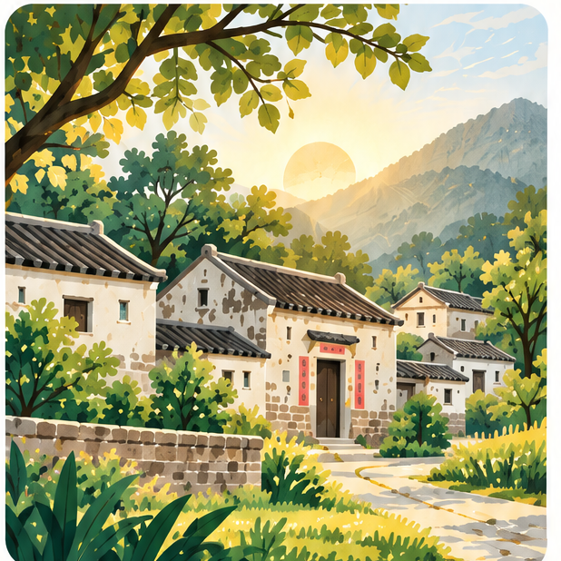
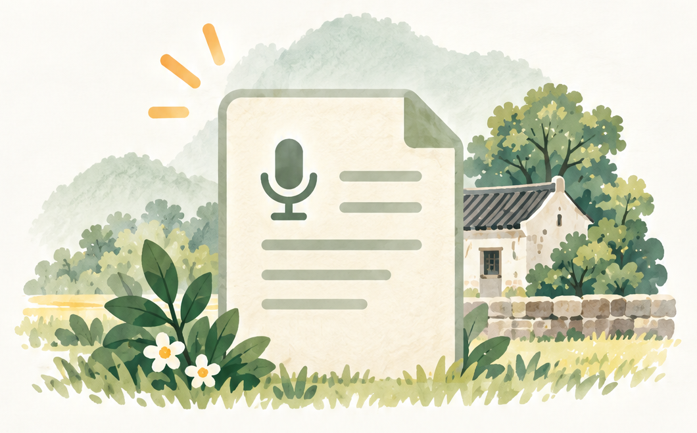
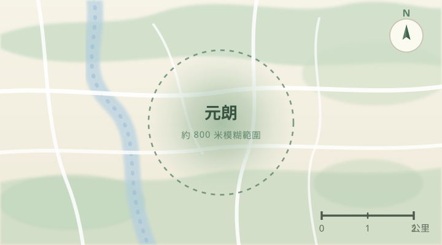

元朗 村落晨光
示範故事
Role-played demo story — created for hackathon demonstration purposes.
音軌為 Boris Lau 真實示範錄音，並非合成人聲。
早晨，歡迎返嚟
聽見長者故事，保存地方記憶

Role-played demo story — created for hackathon demonstration purposes.
音軌為 Boris Lau 真實示範錄音，並非合成人聲。
整理你的草稿、待轉寫與已完成內容

未完成的錄音會保存在這裡，
方便你稍後繼續核對。
完成的錄音上傳後會在這裡排隊，
等待語音轉寫成文字。
經過核對並確認分享範圍的故事，
會保存在這裡。
角色扮演示範故事
社區變遷 鄉土記憶音軌為 Boris Lau 真實示範錄音，並非合成人聲。
位置經模糊處理，並非 GPS 定位

真實地圖由 OpenStreetMap 貢獻者提供・範圍經模糊處理，並非講者實際位置
我的
分享範圍由你決定，
故事亦可按需要更新。
故事地點以模糊範圍呈現，保護講述者私隱。